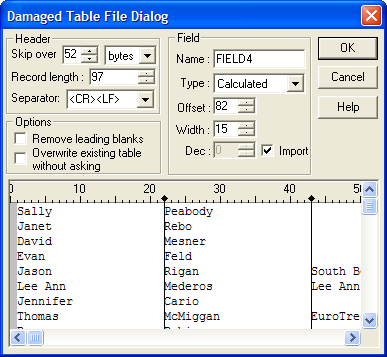

Import Operations
Alpha Five can copy data from a variety of file formats into existing tables or a result table. For example, you have an ASCII file which contains customer information.
Import File (Character-Separated ASCII Format)
|
"001","Adams","555-8211" |
|
"002","Baker","555-2211" |
|
"003","Pertwee","555-8765" |
|
"004","Phillips","555-4567" |
You can import the file into an Alpha Five table.
Result Table
|
Customer ID |
Name |
Telephone No |
|
001 |
Adams |
555-8211 |
|
002 |
Baker |
555-2211 |
|
003 |
Pertwee |
555-8765 |
|
004 |
Phillips |
555-4567 |
Alpha Five's Import Builder supports a variety of file formats including:
Character separated ASCII
Table ASCII
Rich Text Format (RTF)
Damaged dBASE files
Microsoft Excel Versions 3 and 4
Lotus 1-2-3 Version 1 through 3
When you import a file, the result table is automatically added to the current database. If you want to import a (non-damaged) dBASE, dBASEIII, or FoxPro (v2.6 or before) file (*.DBF), you do not need to use the Import Card since dBASE is Alpha Five's native file format. To add a dBASE / FoxPro file to the current database, switch to the Control Panel and select File > Add Table.
 Note : Alpha Five Version
7 supports the ADO Import Genie , which can import data from Microsoft
Access, Microsoft SQL Server, MySQL,
Oracle, or any other database for which an ADO
provider or ODBC driver is available. The ADO Import
Genie also imports data from the latest versions of Microsoft
Excel spreadsheets. There is no limit on the number of records
that can be imported.
Note : Alpha Five Version
7 supports the ADO Import Genie , which can import data from Microsoft
Access, Microsoft SQL Server, MySQL,
Oracle, or any other database for which an ADO
provider or ODBC driver is available. The ADO Import
Genie also imports data from the latest versions of Microsoft
Excel spreadsheets. There is no limit on the number of records
that can be imported.
Performing an Import Operation
 Note : Alpha Five Version
6 provides the Import Builder, which does not
import data from Microsoft Excel V5 and above.
To import files of these type, first open them with Excel,
then save them in Excel Version 4 format. The
Import Builder can import a maximum of 16,384
records at a time.
Note : Alpha Five Version
6 provides the Import Builder, which does not
import data from Microsoft Excel V5 and above.
To import files of these type, first open them with Excel,
then save them in Excel Version 4 format. The
Import Builder can import a maximum of 16,384
records at a time.
To import a file:
Click the Operations tab on the Control Panel.
Click the New button. The Create New Operation dialog box appears.
Select "Import records" in the Select Operation list.
Optionally, click Create Using Genie to display the <span class=Screen>Import Genie</span>.
In Alpha Five version 7, optionally click Create to display the New Import Operation dialog.
Optionally select ASCII File and click OK to display the ((|#Import_Builder|Import Builder)).
Optionally select ADO/ODBC Data Source and click OK to display the ADO Import Genie.
In Alpha Five version 6, optionally click Create to display the Import Builder.
Select the type of file you are importing in the Import type list.
In the Field names list indicate whether the import data contains field names and whether to use them by choosing either:
"No field names"
"Ignore field names"
"Use field names"
 Note : Replace all
space " " characters in Field Names with underscore characters
"_" before running the import.
Note : Replace all
space " " characters in Field Names with underscore characters
"_" before running the import.
Select the file to import in the Import file field.
Select whether you are importing into a New table or an Existing table.
If you are importing into an existing table, optionally click Duplicate record settings... display the Duplicate Record Information dialog and to define how to handle duplicates.
Enter the name of the resulting Alpha Five table in the Result table field.
If you are importing an ASCII file or a damaged dBASE file, click Import Properties to specify how fields and records will be delimited. You may also specify an Offset column in which you specify the starting point for each field.
Click Suggest Table Structure to have Alpha Five identify fieldnames, types, and sizes.
Adjusting the Result Table Structure
At the bottom of the Import Builder is a table control used to determine the structure of the result table. This table control is similar to that in the Create Table Card, except it contains an Import column, in which you specify whether or not you want to include the field in the result table.
By default all fields are imported; to stop a field from being imported, choose "No" in the Import column.
For each field, set the values for Type, Width, and Dec (Decimal Characters).If you have created a table using the Table Editor (refer to Create a New Table ) you should already be familiar with these settings.
Select Records
Optionally, click the
 button on the toolbar to open the Select
Records dialog box and change the record selection.
button on the toolbar to open the Select
Records dialog box and change the record selection.Click the
 button to run the operation.
button to run the operation.
Character-Separated ASCII Import Settings
Your Character-Separated ASCII file may not be in the standard comma-delimited format. To import a file that is not in this format, you need to change the import settings.
This box has the following categories:
File heade r: The source file may have information at the beginning that you do not want to import. If so, you can specify how many lines or bytes to skip before the Import begins. A byte is equivalent to a single ASCII character. Use the Skip over spin box to specify the number of bytes or lines you want to skip; use the second box to indicate whether the Skip box refers to lines or bytes.
Delimiters : A character-separated file uses a special character to indicate where a data value ends and another begins. In most cases, it is a comma (the default value). If the file you are importing uses a different character, enter it in the Field text box.
Most character-separated files use a carriage return and line feed to indicate the end of a record, so that each record starts on a new line. However, you can use a different record delimiter; either type the character(s) directly in the Record Length field, or use its drop-down list box to specify the record delimiter character.Options : If the source file has character fields preceded by blank spaces, check the Remove leading blanks box to remove the spaces when you enter the data in the Result database.
ASCII Table and Damaged dBASE File Import Settings
Both dBASE files and Table ASCII files are fixed record length files. This means that each record contains exactly the same number of characters, and in cases where fields are not completely filled, they are padded with spaces. This assures that each row (record) ends at exactly the same position. For example, you may have an import file which looks like this:
|
NAME |
PHONE |
|
John Smith |
555-1892 |
|
Trey Adams |
555-1122 |
|
Judith Anderson |
555-1212 |
|
Frank Fizz |
555-1211 |
When you select the import file, Alpha Five examines its structure and determines how to divide the file's data into the appropriate records and fields. Sometimes Alpha Five cannot correctly determine these settings, and data is imported incorrectly. In these cases, you need to manually specify how to divide the file's data.
There are two ways to specify these criteria. If you already know the starting point and width for each of the fields in the file, you can type these values into the table control at the bottom of the Import Card. Use the Offset column to specify the field's starting point and the Width column to specify the field's width.
If you do not know the starting point and width of the fields in the file, you can graphically set these criteria using the Table-by-example interface in either the Import Damaged dBASE File dialog box or the Import ASCII Table File dialog box, depending on the type of file you are importing.
To use this control, specify the number of characters to skip by adjusting the Skip over spin box until the first character of the first field of the first record appears at the top left corner of the Table-by-example control.
Next adjust the record length in the Record Length spin box until each row is neatly aligned with the other rows. Picture
{kind=link}

 Note : If you cannot
get the data to line up properly, the records are not of a fixed length
and the file is incompatible with the Alpha Five Import Builder. To correct
this, open the file in a word processor or text editor and make manual
edits by adding spaces so that the data is aligned.
Note : If you cannot
get the data to line up properly, the records are not of a fixed length
and the file is incompatible with the Alpha Five Import Builder. To correct
this, open the file in a word processor or text editor and make manual
edits by adding spaces so that the data is aligned.
The last step is to graphically set the starting and ending points of each field. The Table-by-example control has vertical divider lines that indicate the starting and ending point of each field. When you first open the dialog box, Alpha Five guesses as to where the divider lines should be placed.

These lines can be adjusted in the following way:
To change the position of the last divider line on the right, click the position on the ruler at which the records end.
To move a divider line, click and drag the diamond at the top of the line. The last divider line has a square on it, and cannot be dragged.
To insert a new divider line, click the position on the rules at which you want to insert it.
To remove a divider line, click in the region to the right of the line, then press Delete.
When you have finished each of the fields should be separated with a divider line, and you can import the file correctly.
Click Next > to continue.
Select the File type to import. the options are:
"ASCII text file"
"Excel spreadsheet"
"1-2-3 spreadsheet"
Click Next > to continue.
Click
 and navigate to and select the file you wish to import.
and navigate to and select the file you wish to import.Click Next > to continue.
Specify whether you are going to import the data into a new table or an existing table.If an existing table, enter the table's name.
Click Next > to continue.
In the case of ASCII file import, indicate whether the data is Character delimited or in Table form.
Optionally, check Strip leading blanks if you need to trim character fields.
Optionally, check Do not import first and specify how many lines to skip. You might use these options to avoid importing field names.
Click Next > to continue.
In the case of character delimited fields, indicate how the fields are identified.
Click Next > to continue.
If you selected to import the data into a new table, specify the name of the Result table.
Click Next > to continue.
Indicate whether you want to run the operation now, save the operation and then run it, or view the settings of the Import Builder.
Click Finish.
If you selected Run the Import operation now, (but first save the definition for future use), the Save import settings as... dialog box will appear.
Enter the name of the operation into the Name field and click OK.
If you selected Don't run the Import operation now, just show me how the genie has filled in the Import Builder, the Import Builder will appear.
Optionally, click Save to display the Save import settings as... dialog box.
Enter the name of the operation into the Name field and click OK.
Optionally, click the Run button on the toolbar to run the operation.
See Also
Overview of Batch Operations, Table Operation Methods, ADO Import Genie